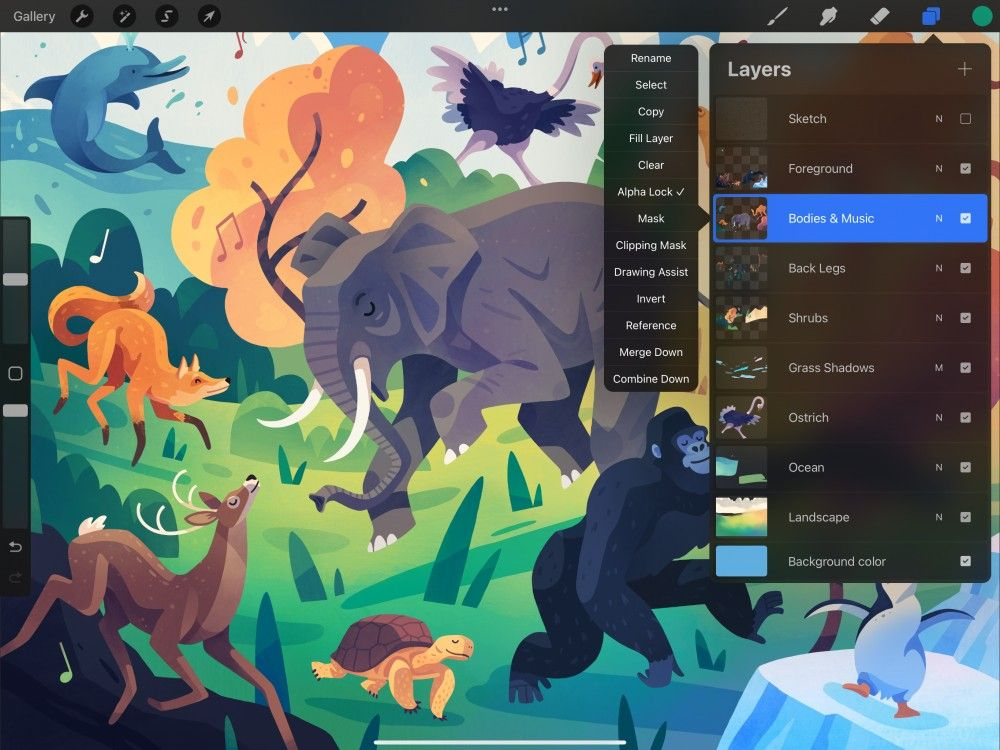

📖 Đã dịch sang tiếng Việt. Thuật ngữ chuyên môn giữ tiếng Anh — rê chuột để xem nghĩa (tooltip).
Interface
Layers (lớp) mang đến cho bạn sự tự do thử nghiệm. Bạn có thể làm việc phía trước hoặc phía sau các thành phần đã có trong bức vẽ. Hơn nữa, bạn có thể di chuyển, nhân bản, chỉnh sửa và hòa trộn kết quả mà không làm thay đổi các lớp khác.
Bảng Layers (Bảng lớp)
Bảng Layers cung cấp một giao diện gọn gàng với nhiều tùy chọn mạnh mẽ, chỉ cách một cú chạm.
Nút Layers
Nút Layers có hình dạng như hai hình vuông chồng lên nhau. Nó nằm ở thanh menu phía trên bên phải của giao diện Procreate.
Chạm vào nút này để mở giao diện Layers.
Create Layer (Tạo lớp)
You'll find the Create Layer button in the top right corner, shaped like a + in the Layers panel
Chạm vào nút đó để thêm một lớp mới.
Tìm hiểu thêm về Creating Layers (Tạo lớp).
Layer Thumbnail (Ảnh thu nhỏ của lớp)
Layer thumbnail cung cấp bản xem trước thu nhỏ về nội dung của từng lớp.
Layers Menu (Menu Lớp)
Layers Menu cho phép bạn chọn và thực hiện thao tác hàng loạt trên các lớp. Chạm vào chữ Layers để mở menu và sử dụng các tùy chọn sau:
- Select All/Deselect All (Chọn tất cả/Bỏ chọn tất cả): Chọn hoặc bỏ chọn toàn bộ các lớp trong khung vẽ. Lớp đang hoạt động hiện tại vẫn được chọn.
- Group (Nhóm): Nhóm tất cả các lớp đã chọn. Thứ tự hiện tại của chúng được giữ nguyên khi được nhóm lại
- Merge (Gộp): Kết hợp và làm phẳng toàn bộ các lớp đã chọn, từ trên xuống dưới
- Share (Chia sẻ): Xuất tất cả các lớp đang được chọn theo định dạng bạn muốn
- Duplicate (Nhân bản): Tạo bản sao cho mỗi lớp bạn đang chọn. Bản sao của từng lớp đã chọn sẽ xuất hiện ngay phía trên lớp đó
- Delete (Xóa): Gỡ bỏ vĩnh viễn tất cả các lớp.
Danger
Just like when you delete a single layer, this is a destructive action. You can only recover this by using Undo (tapping two fingers on the canvas or using the Undo button at the bottom of the Size & Opacity Sidebar).
Layer Name (Tên lớp)
Tên lớp có thể tùy chỉnh cho bạn thêm cách để theo dõi nội dung nào nằm ở lớp nào. Điều này giúp bạn giữ tác phẩm ngăn nắp.
Tìm hiểu thêm về Naming Layers (Đặt tên lớp).
Selected Layer (Lớp được chọn)
Mọi thay đổi bạn thực hiện trên khung vẽ sẽ ảnh hưởng đến lớp đang được chọn. Procreate giúp dễ nhận biết bằng cách tô sáng lớp đang chọn màu xanh.
Bạn có thể chọn một lớp khác bằng cách chạm vào lớp đó.
Tìm hiểu thêm về Layer Selections (vùng chọn layer).
Blend Mode (Chế độ hòa trộn)
Blend Modes cho phép bạn hòa trộn nội dung của nhiều lớp theo nhiều cách khác nhau. Nhờ đó bạn có thể tạo ra và pha trộn nhiều hiệu ứng thị giác.
Chạm vào (các) chữ cái nhỏ ở bên phải một lớp để mở các tùy chọn Blend Mode.
Tìm hiểu thêm về Blend Modes.
Visibility Checkbox (Ô hiển thị)
Chạm vào Visibility Checkbox để ẩn hoặc hiện một lớp.
Chạm vào dấu kiểm trong Visibility Checkbox để tắt và ẩn nội dung của lớp đó. Chạm lại vào Visibility Checkbox để bật dấu kiểm và hiện lại nội dung lớp.
Solo visibility (Hiển thị riêng lẻ)
Nhấn và giữ Visibility Checkbox trên một lớp để xem nội dung của một lớp đơn lẻ. Thông báo ‘Solo visibility on’ sẽ hiển thị ở thanh trên cùng.
Nhấn và giữ lại Visibility Checkbox trên lớp đang hoạt động để hiển thị tất cả các lớp. Thông báo ‘Solo visibility off’ sẽ hiển thị ở thanh trên cùng.
Pro Tip
Solo visibility is perfect for previewing the contents of a single active layer. Just remember to switch solo visibility off when you return to working on the other layers of your artwork.
Heads Up
Any layers that were hidden when solo visibility is switched on, will remain hidden when solo visibility is switched off.
Background Color (Màu nền)
Mỗi tác phẩm Procreate đều đi kèm một lớp Background Color có sẵn.
Chạm vào lớp để chọn màu nền mới, hoặc ẩn lớp đó bằng cách chạm vào Visibility Checkbox của nó.
Pro Tip
Hide the Background Color to create an artwork with a transparent background. This is perfect for exporting art as a PNG.
Layers Menu (Menu Lớp)
Layers Menu cho phép bạn chọn và thực hiện thao tác hàng loạt trên các lớp. Chạm vào chữ Layers để mở menu và sử dụng các tùy chọn sau:
Select All/Deselect All (Chọn tất cả/Bỏ chọn tất cả)
Chọn hoặc bỏ chọn toàn bộ các lớp trong khung vẽ. Lớp đang hoạt động hiện tại vẫn được chọn.
Nhóm tất cả các lớp đã chọn. Thứ tự hiện tại của chúng được giữ nguyên khi được nhóm lại
Kết hợp và làm phẳng toàn bộ các lớp đã chọn, từ trên xuống dưới
Xuất tất cả các lớp đang được chọn theo định dạng bạn muốn
Duplicate (Nhân đôi)
Tạo bản sao cho mỗi lớp bạn đang chọn. Bản sao của từng lớp đã chọn sẽ xuất hiện ngay phía trên lớp đó
Gỡ bỏ vĩnh viễn tất cả các lớp.
Danger
Just like when you delete a single layer, this is a destructive action. You can only recover this by using Undo (tapping two fingers on the canvas or using the Undo button at the bottom of the Size & Opacity Sidebar).
Layer Options Menu (Menu Tùy chọn lớp)
Layer Options menu mang đến nhiều cách để tương tác với các lớp chỉ bằng một cú chạm.


Sau khi đã mở bảng Layers, hãy chọn một lớp bằng cách chạm vào nó. Chạm lại một lần nữa để truy cập Layer Options menu.
Tìm hiểu thêm về Layer Options (Tùy chọn lớp).
Still have questions?
If you didn't find what you're looking for, explore our video resources on YouTube or contact us directly. We’re always happy to help.